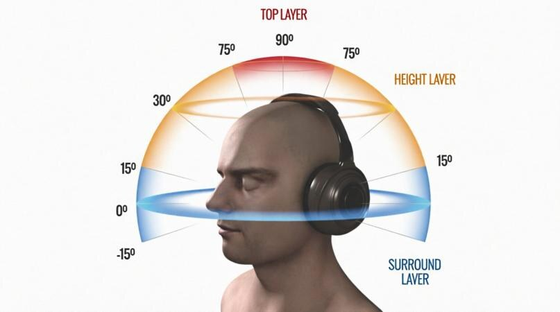

Écoute musicale

Écoute musicale et détente corporelle
L’écoute musicale favorise l’apprivoisement du vide et du silence. Elle invite à faire une pause, à ralentir, et à développer sa capacité à être présent à soi. Elle permet aussi une meilleure écoute de soi, une prise de conscience corporelle, ainsi qu’une diminution des tensions et du stress. Peu à peu, elle soutient une détente du corps et une réconciliation progressive avec lui, tout en mobilisant les ressources de plaisir. Elle ouvre également l’accès aux émotions, à l’imaginaire et aux souvenirs, et peut faciliter la verbalisation de cette vie intérieure.
L’écoute musicale en 8D : Spatialisation de l’espace autour de soi à 360°
La spatialisation du son autour de soi à 360° crée une circulation sonore avec des mouvements latéraux et circulaires. Cette expérience peut solliciter la proprioception et le ressenti corporel. L’hypothèse est que cette circulation sonore, en mobilisant une attention bilatérale et rythmée, favorise le tri des informations, l’apaisement, et peut soutenir l’expression émotionnelle. On peut rapprocher cette logique de certaines approches utilisant une stimulation bilatérale, comme l’EMDR.

🎧 Écouter : mettez un casque, puis appuyez sur le bouton